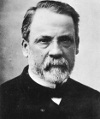

4 Temmuz 1885 tarihinde Joseph Meister adında dokuz yaşındaki bir Fransız çocuk, evinin yanında oynarken kuduz bir köpek tarafından ısırıldı. Köpeğin dişleri Joseph’in derisini delip geçmişti. Bu durum çok korkulan kuduz hastalığının çocuğa bulaşmış olduğuna dair hemen hiç şüphe bırakmıyordu. Dönemin çok korkulan bu hastalığı insanları önce felç ediyor, ardındansa acılı bir ölüm geliyordu.

Meister’in annesi umutsuz bir biçimde ünlü doktor ve bilim adamı Fransız Louis Pasteur’ün (1822–1895) labaratuvarına gitti. Pasteur üç yıldır kuduzun tedavisi üzerinde çalışıyordu. Aşısını köpekler ve tavşanlar üzerinde test etmişti. Ancak Pasteur tedavinin insanlar üzerinde denenmeye hazır olmadığına inanıyordu.
Bakteriler üzerindeki çalışmaları ile mikrobiyolojinin kurucularından kabul edilen Pasteur, doğu Fransa’da doğdu. 1847 yılında kimya doktorası yaptı. On yıl sonra Paris’teki École Normale Supérieure isimli kurumun bilimsel çalışmalar müdürü oldu.
Pasteur kişisel olarak hastalık kapma riski olmasına rağmen devam ettiği korkusuz çalışmaları ile ün kazanmıştı. Geliştirdiği pastorizasyon yöntemi sütlerdeki tehlikeli bakteri ve küflerin gelişimini önlüyordu. Böylece binlerce hayat kurtarmıştı. Yine onun geliştirdiği benzer bir yöntem Fransız bira ve ipek sanayini kurtarmıştı. Mikroplar üzerindeki çalışmalarından yola çıkarak doktorlara operasyonlardan önce ellerini yıkamalarını ve aletlerini sterilize etmelerini önerdi. Bu basit yöntemler ölüm oranlarının inanılmaz derecede düşmesini sağladı.
Pasteur kuduz üzerinde çalışmaya 1882 yılında başladı. Aşılarla, insanı hasta etmeyecek ama vücudun bağışıklık geliştirmesine yetecek kadar bakteri vücuda enjekte ediliyordu. Pasteur bir hayvandan kuduz mikrobunu alıp onu zayıflatabilirse aşısını da geliştiribileceğine inanıyordu.
Meister’in annesi yardım dilemek için yanına geldiğinde aşı on bir köpek üzerinde denenmişti. Pasteur aşının başarısız olmasından ya da çocuğun ölümünü hızlandırmasından korkuyordu. Kısa bir tereddütün ardından aşıyı yapmayı kabul etti. Aşı işe yaradı. Bu sayede çocuk ve sonraki yıllarda başka kuduz kurbanları hastalıktan kurduldular. Pasteur ise kariyerinin en büyük başarısını elde etmiş oldu.
Pasteur hayatının kalan kısmında Pasteur Enstitüsü’nü yönetti. Burayı 1888 yılında kuduzla savaşmak için kurmuştu. 1895 yılında yetmiş iki yaşında öldü.
Ek Bilgiler
1- Kuduzdan kurtulduktan sonra Meister, I. Dünya Savaşı sırasında Fransız Ordusu’nda görev yaptı. Pasteur Enstitüsü’nde bina sorumlusuydu. 1940 yılında Almanlar Fransa’yı işgal edince intihar etti.
2- 1995 yılında Princeton Üniversitesi’nde bir tarihçi olan Gerald L. Geison (1943–2001), Pasteur’ün labarotuar notlarının analizini yayınladı. Buna göre Pasteur başkalarının fikirlerini çalmış ve çalışmalarında bazı tahribatlar yapmıştı. Geison aynı zamanda, Pasteur’ün Meister’e yaptığı aşıyı köpekler üstünde test ettiğini söylerken yalan söylediğini iddia etmektedir. Pasteur köpekler üzerinde farklı bir aşı denemişti. Dokuz yaşındaki çocuğa yaptığı aşı ise daha önce hiç test edilmemişti.
3- Pasteur Enstitüsü halen bulaşıcı hastalıklar üzerine çalışmaya devam etmektedir. HIV virüsü ilk olarak orada 1983 yılında izole edilmiştir.